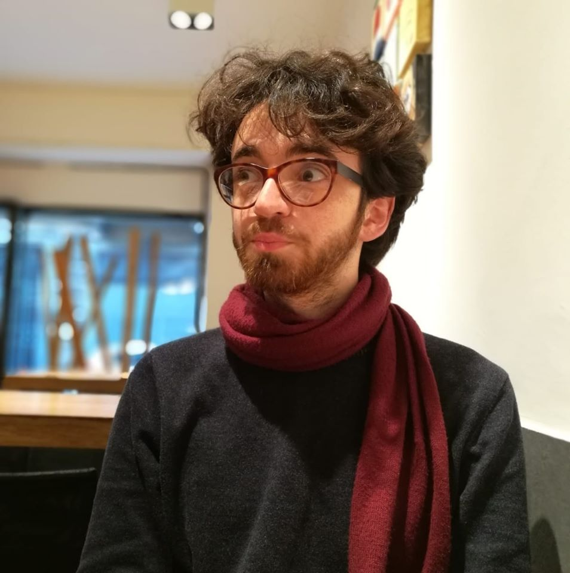

I'm Carlo Debernardi, a master student in Logic, Philosophy and History of Science at Florence University. I got my under degree in Philosophy at Turin University with a dissertation about peer-review in research evaluation and it's limits.
At the moment I'm working on my master project about history of cellular automata. Here you can see a preview of a bibliographic coupling network of papers in the time span 1985-1995.
I'm also working with Eleonora Priori and Marco Viola on a project about academic recruitment. We presented a first draft at the 15th conference of the Italian Association for Cognitive Science (proceedings available here) and some of our results at the seminar Science & More Talks (slides here).
My main interests are philosophy and history of science, social epistemology, division of cognitive labor, research policy, digital humanities, distant reading, agent-based models and bibliometrics.
You can email me at carlo.debernardi.w@gmail.com or find me on ResearchGate.